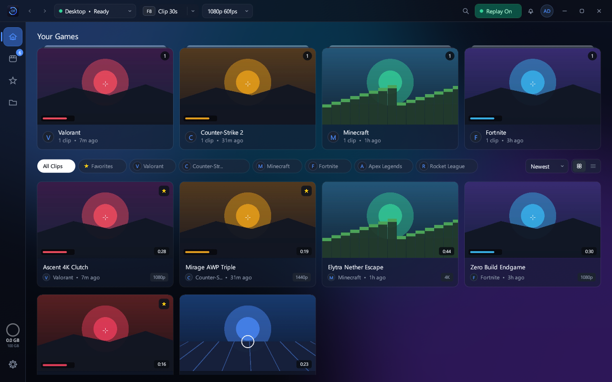

Instant gameplay replay without the bloat.
A fast, local-only Windows 11 clipper written in pure Rust. Keep a rolling buffer in RAM, capture on any GPU, trim losslessly, and export under 10 MB for Discord.
Windows 11 (x64) • NVIDIA NVENC, AMD AMF, or Intel QuickSync • No accounts, no ads, no telemetry.

Everything built in, zero bloat
No Electron, no Overwolf, and no bundled 100 MB FFmpeg binary — just native Windows APIs and Rust.
Zero-Lag RAM Ring Buffer
Holds the last 15s to 5m in compressed RAM (64–768 MB budget) instead of wearing out your SSD with constant temp writes.
NVENC, AMF & QuickSync
Zero-copy D3D11 GPU-to-encoder pipeline (WGC + DXGI with auto alt-tab recovery) encodes HEVC, AV1, or H.264 up to 4K 120fps in MP4 or MKV.
GPU CAS Sharpening
Optional Contrast-Adaptive Sharpening compute shader (Light or Medium) sharpens frames on the GPU before encoding.
Post-Clip Reaction Buffer
Hit your save hotkey the moment a play happens and keep recording 5, 10, or 15 extra seconds so reactions stay in.
Lightweight Game Detection
Detects games using foreground window titles and classes only — never opens game process handles or injects DLL overlays.
Ephemeral UI + Tiny Daemon
Close the window and the egui interface exits completely (0 MB UI RAM) while the lightweight tray daemon keeps capturing.
Multi-Track Audio Splitting
Pick specific output and mic devices, adjust independent volumes, mute mic with Ctrl+M, and save separate Game + Mic tracks in MP4/MKV.
Discord < 10 MB Compressor
Automatically calculates bitrate, resolution, and framerate to fit any clip or trimmed range strictly under Discord's 10 MB limit.
Lossless Trim & 9:16 Vertical
Scrub frame-by-frame in the hardware-decoded player and export lossless IDR-keyframe MP4 trims (or 9:16 vertical) without stalling replay.
Per-Game Library & Undo
Auto thumbnails, per-game folders, search, favorites, collections, an 8-second Undo Delete, and auto-cleanup at your storage cap.
Custom Theme & SteamGridDB
Add a custom wallpaper with blur/brightness and auto-extracted accent colors, plus automatic game icons pulled via SteamGridDB.
Discord RPC & 1-Click Updates
Shows live status via Discord Rich Presence, installs via a single self-contained EXE, and updates straight from GitHub Releases.
Memory Footprint
Rewind's split daemon + ephemeral UI stays around ~64 MB while capturing, and drops UI memory to 0 MB when closed.
How Rewind stacks up
ShadowPlay's simplicity, Medal's clip library, and OBS's openness — without the bloat.
| Feature | Rewind | Medal / Outplayed | ShadowPlay / ReLive | OBS Studio |
|---|---|---|---|---|
| 100% Local, Free & Open Source | Yes (GPL-3.0) | Ads / Paywalls | Proprietary | Yes (GPL-2.0) |
| Works on NVIDIA, AMD & Intel | Yes | Yes | Vendor-locked | Yes |
| RAM Ring Buffer (SSD-friendly) | Yes (64–768 MB) | Disk writes | Disk writes | Yes |
| Zero-Copy GPU Capture Pipeline | D3D11 → NVENC/AMF/QSV | Yes | Yes | Yes |
| Multi-Track Audio (Game + Mic) | Separate tracks | Limited | Yes | Yes |
| No Electron / Overwolf Bloat | Native Rust | Electron / Overwolf | Native | Native |
| Zero DLL / Overlay Injection | Window-only detection | Injects hooks | Overlay hooks | Game Capture hooks |
| Clip Library & Lossless Quick Trim | Built-in | Built-in | Basic | No |
| 1-Click Discord < 10 MB Export | Built-in | Paid / Cloud links | No | No |